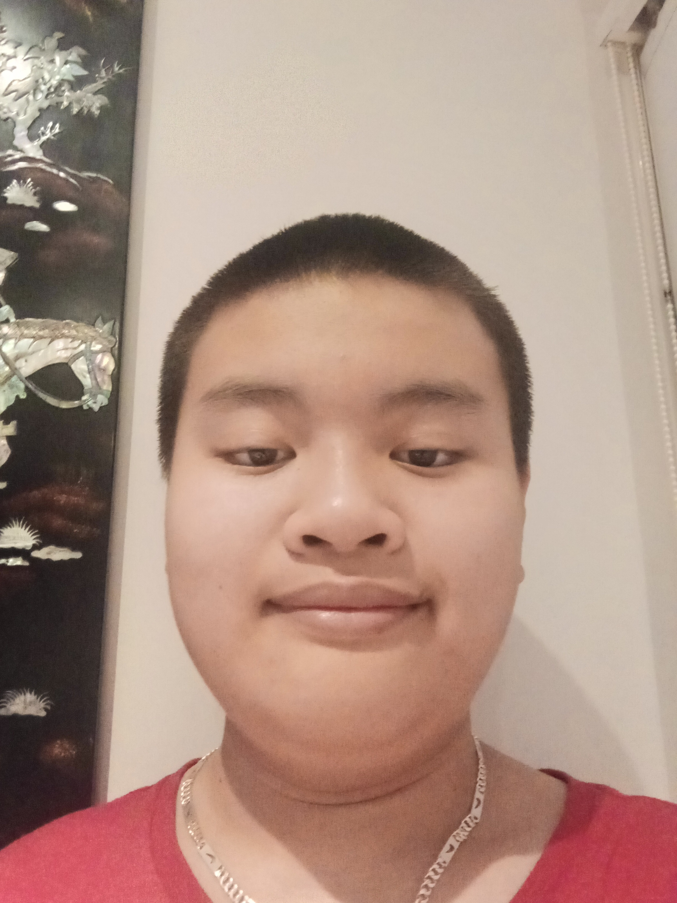

I am a hard and studious worker who always focuses on my work. I am also quite shy and reserved. There are five people in my family: my mum, my dad, my brother, my sister and me. I am currently studying Mathematics, English, Science, HSIE, IST, Japanese, PE and Agriculture at Hurlstone Agricultural High School.
Photo of Raymond Ton
Facts About Me
- My favourite subject is Mathematics.
- I loves playing video games.
- I was born on February 10 2006.
- I cannot really tolerate my own failures.
Aspirations and Goals
I will aspire to become a person that will have an impact in my community. I will aspire to become a person that people can trust and respect in the future. My goals are to make sure that I get good grades to expand my career options. From there, I aspire to make sure that I have a job that pays decently well to sustain a happy and enjoyable lifestyle. I want this job to be very enjoyable and bring some sort of purpose for my life.